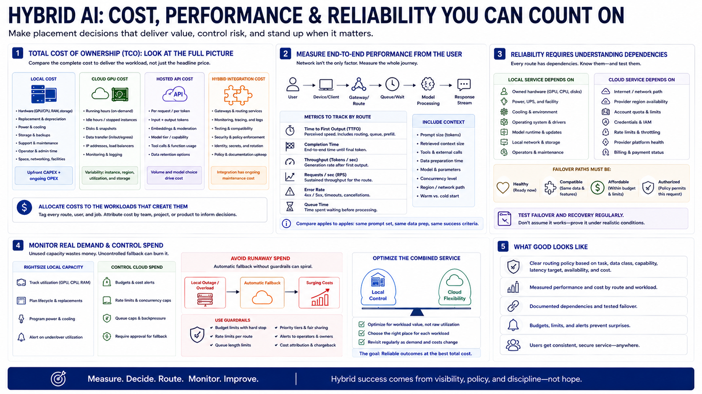

Cost, Performance, and Reliability
Connecting to LMS... Progress: in progress

Narration
Compare total cost of ownership rather than one GPU or API price. Local cost includes hardware, replacement, power, cooling, storage, support, and operator time. Cloud GPU cost includes running and idle hours, disks, snapshots, and transfer. Hosted APIs add request or token charges. Hybrid integration adds gateways, monitoring, testing, and policy maintenance. Allocate these costs to the workloads that create them.
Measure end-to-end performance from the user. Local generation may avoid network delay but use a smaller model. Cloud generation may be faster after arrival yet slower overall because of routing, upload, queueing, or cold start. Track time to first output, completion, throughput, error rate, and queue time by route. Include prompt size and data preparation so comparisons remain meaningful.
Reliability requires understanding dependencies. Local service depends on owned hardware, power, cooling, and maintenance. Cloud service depends on network, provider region, account quota, credentials, and rate limits. A failover path must be healthy, compatible, affordable, and authorized for the request. Test failover and recovery rather than inferring them from an architecture diagram.
Monitor real demand before scaling either side. Idle local hardware and unused cloud reservations waste different kinds of money. Automatic cloud fallback can create runaway spending during a local outage, so use budgets, rate limits, queue caps, and alerts. Optimize the combined service for workload value, not for maximizing use of either environment.